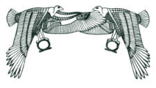
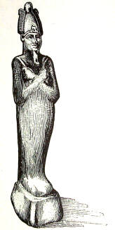
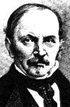
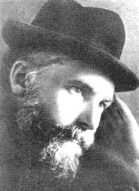
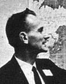
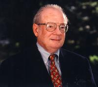
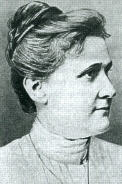
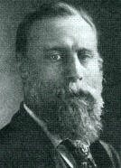
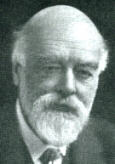
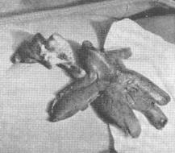

|
Survival of Consciousness After Death I have no final conclusions to offer about ghosts, spirits, reincarnation, or any other manifestation suggestive of survival after death. As in most areas of consciousness exploration, a final opinion is of less value than an appreciation of and tolerance for ambiguity; as well as a willingness to carefully explore the evidence and claims, cultures and contexts. For the great by-product of the search for the life beyond is an extraordinary enrichment of our understanding of the life within. In the first edition of this book, as I
was writing about this topic, I found it difficult in my excitement to
keep from floating off into romantic speculation about the great beyond.
The feeling was something like looking at a mountain peak in the distance,
being stimulated by the excitement of its beauty and majesty, just by knowing
it is there. What The Roots of Consciousness is about (I had to
remind myself) is the continuum of existence between birth and death. It
is something like the space between sleeping and waking. Moving from one
to the other is really a gradual process. Each step takes us to the next.
Living and dying, breathing, sleeping, dreaming, being, communicating --
our consciousness touches all of these worlds. Yet, in the spirit of the
early Wittgenstein (the twentieth century's great positivist philosopher),
there is truly nothing meaningful I can say about existence beyond the
veil of mortal life (if such there be). What I shall expound upon is the
consciousness that we the living develop in relationship to the mystery
of death. For we are all touched by its silence.
Ancient Egypt  In Egypt, life after death was thought to be a natural continuation of life on earth, and one senses another inner reality merging with their technology. The shamanic practices of earlier tribes became incorporated into the organized Egyptian national priesthood. However, the Egyptian religion is no longer practiced, and the ancient language is largely lost. The evidence remaining regarding the different cults and their practices and theologies is still shrouded in impenetrable mystery. Yet, these people devoted themselves so intensely to their cult of the dead, it is easy to imagine that many of their seer-priests actually did see the spirits of their departed. The following testament comes from the pyramid of Unas, a 5th Dynasty king: The heavens drop water, the stars throb, the archers go round about, the bones of Akeru tremble, and those who are in bondage to them take to flight when they see Unas rise up as a soul, in the form of the god who liveth upon his fathers and who maketh food of his mothers. Unas is the lord of wisdom and his mother knoweth not his name ...The kas of Unas are behind him, the sole of his foot is beneath his feet, his gods are over him, his uraei are upon his brow, the serpent guides of Unas are in front of him and the spirit of the flame looketh upon his soul. The powers of Unas protect him: Unas is a bull in heaven, he directeth his steps where he will, he liveth upon the form which each god taketh upon himself, and he eateth the flesh of those who come to fill their bellies with the magical charms in the Lake of Fire.As one might infer from the above passage, the Egyptian version of existence in the afterworld is somewhat obscure. In certain instances it seems that the Egyptians actually believed in a physical existence after death for which the departed required worldly riches and sustenance. Other descriptions are embodied in the realm of mythology so that the nature of the afterlife is deeply symbolized in the godforms themselves. The Egyptian concept of spiritual resurrection after death has a mythological basis in the story of Osiris -- the lord of creation who was also a king of Egypt.  Osiris At the height of his reign, Osiris is murdered by his jealous enemy Set. His body is enclosed in a chest that is placed at the mouth of the Nile, but eventually recovered by Osiris' wife, Isis. Set however, finds it once more and dismembers it into fourteen pieces he scatters throughout the land. Isis searches for the pieces of Osiris' body and finds all of them except the phallus. At this point, Horus, the sun, the hawk god, appears on the scene. As the god of the sun, he always existed. In fact the hawk is probably the first living thing worshipped by the Egyptians, yet he is conceived by Isis from the dismembered body of Osiris lacking the progenitive organ! The appearance of Horus represents the resurrection of Osiris. Filled with his father's spirit, he defeats Set in battle. The battle between Horus and Set is re-enacted each day. You can watch this epic drama as it unfolds in the sky by getting up several hours before dawn and silently observing the sunrise. The ancient Egyptians believed that as
the hawk arose from the dismembered body of Osiris, so would their awareness
survive the bodily death. However they also seemed to believe that proper
funeral rites were necessary to attaining afterlife in heaven. It seems
we are dealing with mixed popular superstitions with higher philosophy
and occult practice. In many ways the Egyptians seem to describe the afterlife
as being quite physical and sensory -- but perhaps this is a description
of how real it was for them. This physical imagery is, perhaps, a poetical
metaphor for the images the ancient seers had of the afterlife.
The Tibetan Book of the Dead Buddhism, which originated in India, reached a height of consciousness exploration in Tibet. All states of existence for the Tibetan Buddhists other than pure Nirvana are reflections of the limited illusion of self-consciousness. The Tibetan Book of the Dead is a major document within this tradition; it describes the passage of consciousness from death to rebirth. Existence is divided into six bardos, three of which are experienced from birth to death and three of which occur from death to rebirth. Yet, Buddhist philosophy teaches that birth and death are not phenomena that occur only once in a human life; they are part of an uninterrupted process. Every instant something within us dies and something is reborn. The different bardos represent the different aspects of this process in our own lives. All of these states are in flux. chikhai bardo: The experience of the primary clear light and the secondary clear light at the moment of death. chonyd bardo: The state of psychic consciousness. Experiencing lights, sounds and rays. Seeing the peaceful deities and then the wrathful deities. sidpa bardo: Visions of the world into which one's karma leads one to be born. Visions of males and females in sexual union. Feelings of attachment and repulsion. Choosing and entering the womb. bsam-gtan bardo: The dream state. skye-gnas bardo: The everyday waking consciousness of being born into the human world. These bardo states refer to the mental processes of the soul during the periods of life and rebirth. Outside of one's own consciousness there still remains another reality to be explored. Entrance to this reality is attained by recognizing at any point that the images and apparitions of the bardo state are merely the projections of one's own consciousness. With every thought of fear or terror or aweThis situation very closely parallels the weighing of the heart described in the Egyptian Book of the Dead as well as the judgments appearing in later Greek and Christian traditions. It seems to reflect an archetypal reality that permeates the deep consciousness of many cultures, perhaps the ultimate symbol of meaning and order in the universe. Modern research is still attempting to investigate this reality, though perhaps with less sophistication than the Tibetans who claim to have developed ways to communicate with the departed spirit after death in order to aid in its passing through the bardo states. Interestingly enough, the Tibetan Book of the Dead, has been used as a "constant companion" by Carl Jung whose psychological theories tend to unite scientific logic with mysticism. It was also used by Timothy Leary, Richard Alpert and Ralph Metzner as the basis for understanding the nature of the psychedelic experience. The bardo states are accessible to everyone. Yet there is a subtle process involved in attaining all higher states of consciousness -- a kind of trying not to try -- which is embodied most clearly in the life of Tibet's great saint, Milarepa, who never uttered a word that did not come out in song and poetry. This delicacy of living is manifest also in Chinese Taoism. Every culture has a set of beliefs regarding
the afterlife. Some of the most interesting are those developed by scientists
themselves.
The Visions of Gustav Theodore Fechner The great psychophysicist Gustav Theodore Fechher -- one of the foremost instigators of modern, scientific psychology -- wrote extensive speculations in a work called the Book of Life After Death which G. Stanley Hall describes thus: How now do the dead live on? First and chiefly in us. Fechner takes his leading concept from the mystic way in which Christ lives in his followers, who are members of his body and branches of his vine. To this larger life of his in the Church, his earthly career is only a grain of mustard seed. Gloriously his soul has gone marching on. Just so the dead press in upon us, yearning to add their strength to ours, for thus they not merely live, but grow. New impulsions and sudden insights in us are inspirations from them. Not only do the great and good dead influence and pervade us all the time, but we are exposed also to the bad. Many of them are always bad, and so if our will is weak and our personality unorganized, they may dominate us. Their visitation is insistent. They do not crave incarnation in the flesh, like Plato's spirits, but in our moral life, that therein they may be made perfect. We all have in us sparks from the lives of Luther, Goethe, Napoleon, etc., who think and act in us "no longer restrained by the limitations of the body, but poured forth upon the world which in their lifetime they moulded, gladdened, swayed, and by their personality they now supply us with influences which we never discern as coming from them." Each great dead soul extends itself into man and unites them in a spiritual organism. Thus, the dead converse wit each other in us. They also fight the good and bad in each other in us, causing strife in our souls....When the phenomena of spiritualism became popular in mid-nineteenth century Europe and America, Fechner sat with zeal at a number of seances. He was one of the few men of his age who, while not detecting trickery, had the depth of wisdom with which to incorporate but also transcend the sensationalism and trivia of the popular spiritualist impulse. Spiritualism
Spiritualism as a social movement apparently began in the small New York town of Hydesville in March of 1848, where several months earlier, the Fox family had taken over an old farmhouse about which the previous tenants had complained of strange noises. The Foxes themselves soon noticed unusual rapping sounds that occurred in the night frightening the two younger daughters, Margaret and Kate, who then insisted on sleeping with their parents. On the fateful evening of March 31, the youngest daughter Kate playfully challenged the raps to repeat the snapping of her fingers. Her challenge was answered. Within hours many of the neighbors were brought over to the house to witness the uncanny demonstration.
By asking the sounds be repeated twice for a negative answer and only once for an affirmative, the people assembled were soon able to carry on a `(!logue with the rapping -- which had revealed itself to apparently be coming from a spirit source. One of the neighbors, Deusler, suggested naming the letters of the alphabet and having the spirit rap when they reached certain letters in order to spell out letters and sentences. In this way the spirit revealed himself to have been a travelling peddler who was murdered in the house by a previous owner and buried in the cellar. Digging commenced, however a high water level prevented any immediate discoveries. Meanwhile, hundreds of neighbors continued visiting the Fox house, day and night, listening to the spirit's rapping. They also formed an investigation committee to take testimony. The case was even studied by the Honorable Robert Dale Owen, a member of the U. S. Congress, and a founder of the Smithsonian Institute. In the summer of 1848, more digging unearthed human teeth, some fragments of bone and some human hair. While the testimony is ambiguous, some neighbors reported that the raps continued in the Fox house even when family members were not present. However, it became apparent that this form of mediumship centered on the Fox sisters, though it soon spread to many other people as well. Fifty-six years later in 1904, the gradual disintegration of one of the cellar walls of the Fox house exposed to view an entire human skeleton. Other mediums, using the alphabet method, also claimed to be in contact with the spirits of the deceased. Their messages were generally not reliable however. It seems that for every apparently genuine medium there were many deluded or phony imitators. During November 1849, the Spiritualists held their first public meeting in the largest hall available in Rochester, N.Y. Three different citizen's committees in Rochester were invited to investigate the Fox sisters. All three made favorable reports indicating that the sounds heard were not produced by ventriloquism or machinery. The public was outraged at these reports. A riot resulted and the girls had to be smuggled away from an angry crowd. The Fox sisters made a career of their mediumship. They toured the country under the auspices of the showman, P. T. Barnum. While receiving the sympathetic attention of Horace Greeley, the editor of the New York Tribune, who later became a candidate for the U.S. presidency, the sisters remained a center of controversy. In 1871, Charles F. Livermore, a prominent New York banker, sent Kate Fox to England in gratitude for the consolation he had received through her powers.104 At that time she was examined by the physicist Sir William Crookes, who later received the Nobel prize for his discovery of thalium: For several months I have enjoyed the almost unlimited opportunity of testing the various phenomena occurring in the presence of this lady, and I especially examined the phenomena of these sounds. With mediums, generally, it is necessary to sit for a formal seance before anything is heard; but in the case of Miss Fox it seems only necessary for her to place her hand on any substance for loud thuds to be heard in it, like a triple pulsation, sometimes loud enough to be heard several rooms off. In this manner I have heard them in a living tree -- on a sheet of glass -- on a stretched iron wire -- on a stretched membrane -- a tambourine -- on the roof of a cab -- and on the floor of a theatre. Moreover, actual contact is not always necessary; I have had these sounds proceeding from the floor, walls, etc., when the medium's hands and feet were held when she was standing on a chair when she was suspended in a swing from the ceiling -- when she was enclosed in a wire cage -- and when she had fallen fainting on a sofa. I have heard them on a glass hermonicon -- I have felt them on my own shoulder and under my own hands. I have heard them on a sheet of paper, held between the fingers by a piece of thread passed through one corner. With a full knowledge of the numerous theories which have been started, chiefly in America, to explain these sounds, I have tested them in every way that I could devise, until there has been no escape from the conviction that they were true objective occurrences not produced by trickery or mechanical means.The main argument used by skeptics to discredit the Fox sisters was that they created the rapping sounds themselves by cracking the bones in their toes and knuckles. This hypothesis, however, does not seem sufficient to explain the different kinds of sounds that appeared, their loudness, the fact that they often occurred in arpeggios and cadenzas, and the fact that they seemed to emanate from different places. Nevertheless, in 1888, Margaret Fox made a public statement denouncing the spiritualists, claiming that she had made the noises by cracking her toes. Kate, who was with her at the time remained silent, as if in agreement. The following year, however, Margaret recanted, saying she had fallen under the influence of people who were inimical to spiritualism and who had offered her money. Both sisters were alcoholics at this time. At no time in their careers were they actually detected in a fraudulent act. Crookes also recorded an experience of direct writing with Ms. Fox: A luminous hand came down from the upper part of the room, and after hovering near me for a few seconds, took the pencil from my hand, rapidly wrote on a sheet of paper, threw the pencil down, and then rose up over our heads, gradually fading into darkness.
 Allan Kardec From the ranks of the spiritualists investigations were also conducted, although along somewhat different lines than the experimental work of the scientists. The former attempted to describe the world according to the teachings of the spirits themselves. This theorization of spiritualism was mainly due to L. H. D. Rivail (1803-1869) a doctor of medicine who became celebrated under the pseudonym Allan Kardec. Kardec's theories were simple enough: After death the soul becomes a spirit and seeks reincarnation, which, as Pythagoras taught, is the destiny of all human souls; spirits know the past, present, and future; sometimes they can materialize and act on matter. We should let ourselves be guided by good spirits, Kardec maintained, and refuse to listen to bad spirits. Kardec wrote many books which achieved
enormous popularity in his own lifetime. His works also spread to Brazil,
where he still has a huge following, and where postage stamps were recently
issued in his honor. His intellectual energy certainly deserves admiration.
However, he built his theory on the untenable hypothesis that mediums,
embodying a so-called spirit, are never mistaken, unless their utterances
are prompted by evil spirits. This notion does not of course, take into
account the possi-bilities of suggestion, multiple personality, or unconscious
influences which were quickly developed as alternative hypotheses to outright
fraud by skeptical scientific investigators such as Michael Faraday.
Founding of the Society for Psychical Research Sir William F. Barrett, a professor of physics at the Royal College of Science in Dublin, had been conducting experiments in the 1880s testing the notion of thought-transference. Barrett conceived of the idea of forming an organization of spiritualists, scientists, and scholars who would join forces in a dispassionate investigation of psychical phenomena. F.W.H. Myers, Edmund Gurney and Henry Sidgewick attended a conference in London that Barrett convened, and the Society for Psychical Research (SPR) was created with Sidgewick, who had a reputation as an impartial scholar, accepting the first presidency. The Society set up six working committees, each with a specific domain for exploration: 1. An examination of the nature and extent of any influence which may be exerted by one mind upon another, apart from any generally recognized mode of perception.The great American psychologist, William James, met Gurney in England in 1882 and immediately they struck up a close friendship. Later James also became a close friend of Myers. In 1884, Barrett toured the United States and succeeded in arousing the interest of American scholars in forming a similar society, which was established in 1885, and in which William James took an active role. The American Society for Psychical Research constituted the first organized efford for experimental psychological research in the United States. For a period of many years, before the ascendency of the German experimental approach of Wilhelm Wundt, psychology in the United States was equated with the efforts of psychical research. The evidence for life beyond death comes from several sources. There are cases of hauntings and apparitions, mediumistic communications and automatic writings, possessions, incidences of child prodigies, and ostensible reincarnation data. A large amount of this evidence was gathered during the heyday of spiritualism in the nineteenth century, and is recorded in The Human Personality and Its Survival of Bodily Death by F. W. H. Myers. Modern research places a much greater emphasis on laboratory studies and is predicated upon a much different approach to the evidence. Many levels of the human personality clearly
exist and are still generally unexplored and untapped. Yet a number of
cases can be cited where even such explanations do not account for all
the observed phenomena.
Human Personality and Its Survival of Bodily Death  F. W. H. Myers Many other phenomena were explored by the SPR during its early years. The major attempt to synthesize the great mass of data which had been gathered was undertaken by Frederick Myers and published in 1903 after his death in a work called The Human Personality and Its Survival of Bodily Death. Myers was widely read in all the fields of knowledge of his day. His work is a testimony to his wide-reaching and poetical mind and his deep interest in the work of the psychoanalysts. He was, in fact, the first writer to introduce the works of Freud to the British public, in 1893. His book is still regarded by many as the most important single work in the history of psychical research. Even those who do not accept his hypothesis of the survival of the soul are indebted to his explorations of the unconscious and subliminal regions of the personality. Myers maintained that the human personality was composed of two active coherent streams of thoughts and feelings. Those lying above the ordinary threshold of consciousness were considered supraliminal while those that remain submerged beneath consciousness are subliminal. The evidence for the existence of this subliminal self derives from such phenomena as automatic writing, multiple personalities, dreams, and hypnosis. These phenomena all expose deeper layers of the personality that normally remain unseen. In many cases the deeper layers seem autonomous and independent of the supraliminal self. For example, certain memories are uncovered through hypnosis and dreams which are normally inaccessible to the conscious mind. Or in the case of certain people of genius, complete works of art will emerge from dreams. Automatic writers can sometimes maintain two conversations at once, each unaware of the other one. Myers examined all of these phenomena carefully and felt that they were part of a continuum ranging from unusual personality manifestations to telepathic communications, travelling clairvoyance, possession by spirits, and actual survival of the subliminal layers of personality after the death of the body. He felt each experience in this spectrum was integrally related to the other states of being. This insight was his deepest theoretical penetration into the roots of consciousness. Myers began his analysis by looking at the ways in which the personality was known to disintegrate. Insistent ideas, obsessing thoughts and forgotten terrors lead up to hysterical neuroses in which the subliminal mind takes over certain body functions from the supraliminal. Gradually these maladies merge with cases of multiple personalities. He noted the subliminal personalities often represented an improvement over the normal conscious self, and suggested that: As the hysteric stands in relation to ordinary men, so do we ordinary men stand in relation to a not impossible ideal of sanity and integration.Thus from the disintegrated personality which reveals some of the negative aspects of the subliminal self, Myers moved naturally to look at people of genius, within whom, according to Myers, "some rivulet is drawn into supraliminal life from the undercurrent stream." He discussed mathematical prodigies and musicians whose works spring fully formed into their consciousness. Of particular interest was Robert Louis Stevenson who deliberately used his dream life in order to experiment with different dramatizations of his stories. Not mentioned by Myers, but certainly applicable here, would be the incredible inventions which entered the minds of Thomas Edison (himself a spiritualist) and Nicola Tesla, whose genius led him to develop alternating current and many modern electrical appliances. Myers did cite the poet Wordsworth as being particularly sensitive to this aspect of the creative process, which he described in "The Prelude, or Growth of a Poet's Mind:" That awful power rose from the mind's abyss,
In addition to people of genius, Myers included saintly men and women whose lives have absorbed "strength and grace from an accessible and inexhaustible source." From neurosis, genius and sainthood Myers moved to a state of being all individuals experience -- sleep, which he describes as the abeyance of the supraliminal life and the liberation of the subliminal. The powers of visualization, for instance, are heightened during the hypnogogic state as one passes into sleep and in the hypnopompic state as the dream lingers into waking consciousness. Myers also discerned the heightened powers of memory and reason that occur in some dreams, and further cases of clairvoyance and telepathy in dreams. And he cited cases of what seem to be "psychical invasions" in dreams by spirits of both living and departed persons. He concluded by suggesting that sleep is every person's gate to the "spiritual world." Hypnosis was described as the experimental exploration of the sleep phase of human personality. The unusual phenomena that occur in hypnosis were ascribed to the power of the subliminal self that is appealed to in such states. The subliminal self appears to enjoy greater control over the body than the supraliminal. Myers also pointed out the relationship of hypnosis to other phenomena such as faith healing, the miraculous cures at Lourdes, and the use of magical charms. He emphasized the experimental work done in telepathic hypnotic induction at a distance as well as telepathy, clairvoyance and precognition observed in the hypnotized subject. From hypnosis Myers moved to visual and auditory hallucinations psychical researchers have labelled sensory automatisms. When hearing a sound or seeing a color or form carries with it an association of images from another sense, this process is within the brain and is termed entencephalic. The stages leading from such percepts to ordinary vision include entoptic impressions due to stimuli from the optic nerve or eye and after-images which are formed in the retina. Stages leading further inward from entencephalic vision include memory images, dreams, images of the imagination and hallucinations. Many hallucinations cited were shown to contain information that was later verified. Other hallucinations clearly seemed to hold positive benefits for the personality and were not associated in any way with disease. Crystal gazing is a possible positive use of the mind's ability to hallucinate. Other hallucinations include the phantasms of the living and the dead which we have already discussed. From sensory automatisms Myers moved to motor automatisms -- including automatic writing and speaking in tongues. Most of these phenomena can be attributed to the subliminal mind within the automatist's own brain. Other cases lead one to suspect telepathy and possible communication from deceased spirits. There are cases of automatic writing, for example, in which the handwriting of a deceased person is alleged. A further development of this would be possession by another personality other than the subliminal self. However, it is very difficult to distinguish cases of spirit possession from cases of multiple personality. The personal identity of such a spirit must be clearly distinguished by its memory and its character. Yet this is a phenomena common to all religious traditions that has also been observed at least once, Myers felt, by SPR researchers. He noted that such possession did not appear to have an injurious effect on the medium. It is on the basis of this continuum of
experiences that Myers asserted the subliminal self is able to operate
free from the brain in ways that modify both space and time as they appear
to the supraliminal self. Just as the subliminal self is able to control
physiological functions of the brain and body, as best exemplified through
hypnotic experiments, so is it able to exert force on other physical objects
accounting for levitations, materializations, spirit rapping, etc.
The Watseka Wonder The case of the Watseka Wonder is listed by Myers as an incidence of multiple personality strongly suggesting the spiritualist hypothesis. It was originally published in the Religio-Philosophical Journal in 1879 and later in pamphlet form with the title "The Watseka Wonder," by E. W. Stevens. The editor of the journal, highly regarded as a skillful and honest investigator by Myers, spoke highly of Dr. Stevens and claimed to have taken great pains to "obtain full corroboration of the astounding facts" from competent witnesses. The case briefly is the alleged possession of thirteen year old Lurancy Vennum by the spirit of Mary Roff, a neighbor's daughter who had died at the age of eighteen when Lurancy was a child of about fifteen months. Myers quotes Dr. Stevens, with his abridgements in square brackets: [Mary Lurancy Vennum, the "Watseka Wonder," was born April 16th, 1864, in Milford township, about seven miles from Watseka, Illinois. The family moved to Iowa in July 1864 (when Lurancy was about three months old), and returned to within eight miles from Watseka in October 1865 (three months after the death of Mary Roff). Lurancy was then about a year and a half old. After two other moves in the neighbourhood, the family moved into Watseka on April 1st, 1871], locating about forty rods from the residence of A. B. Roff. They remained at this place during the summer. The only acquaintance ever had between the two families during the season was simply one brief call of Mrs. Roff, for a few minutes, on Mrs. Vennum, which call was never returned, and a formal speaking acquaintance between the two gentlemen. Since 1871 the Vennum family have lived entirely away from the vicinity of Mr. Roff's, and never nearer than now, on extreme opposite limits of the city.In 1890, Richard Hodgson visited Watseka and interviewed many of the principle witnesses of this case. Their testimony was in agreement with Dr. Stevens' presentation. However, Hodgson was unable to get in touch with Lurancy Vennum herself. He draws the following conclusions to the case: I have no doubt that the incidents occurred substantially as described in the narrative by Dr. Stevens, and in my view the only other inter-pretation of the case -- besides the spiritistic -- that seems at all plausible is that which has been put forward as the alternative to the spiritistic theory to account for the trance-communications of Mrs. Piper and similar cases, viz., secondary personality with supernormal powers. It would be difficult to disprove this hypothesis in the case of the Watseka Wonder, owing to the comparative meagreness of the record and the probable abundance of "suggestion" in the environment, and any conclusion that we may reach would probably be determined largely by our convictions concerning other cases. My personal opinion is that the "Watseka Wonder" case belongs in the main manifestations to the spiritistic category.
Working as honorary secretary of the SPR and active on the literary committee, Edmund Gurney soon discovered that the largest single class of occurrences reported were what came to be labelled crisis apparitions. These occur when the figure or the voice of a living person who is experiencing a crisis--such as an accident or a death--is seen or heard. Probably you or your friends have had such experiences, that are strangely confirmed by the news, later on, of the actual crisis. Within one year of its organization, the SPR had collected over 400 reports of such cases and in 1886, Gurney published a 1,300 page document entitled Phantasms of the Living in which 702 different apparition cases were analyzed. All of the evidence was obtained first-hand from the percipients and was generally backed by corroboratory testimony. Witnesses were also interviewed by SPR members who appraised the value of all testimony. Gurney described several categories of apparition cases. These are cases of spontaneous telepathy, which occur when the sender is undergoing some shock or strong emotion. For example a lady lying in bed may feel a pain in her mouth at the exact moment when her husband is accidently struck in the jaw. Then come cases where the percipient's experience is not an exact reproduction of the agent's experience, but is only founded upon it, the receiver building a detailed picture from his or her own mind. There are many cases of this type where a person about to arrive at a location is actually seen there by someone not expecting him before his arrival. It is very unlikely that the agent will have in his mind the image of himself as others see him. Finally Gurney refers to the cases in which the agent may be dead or dying while the phantom appears in quite normal behavior and clothing. Gurney felt that these cases could be explained as hallucinations induced in the mind of the percipient by means of a telepathic message from the agent. What was harder to explain were collective apparitions in which several people independently perceive the identical phantom. There were also reciprocal cases whereby a person imagining himself to be at a distant scene is actually seen at that location by others. Phantasms of the Living was soon criticized by the eminent American philosopher C. S. Pierce and several others on the grounds that the cases reported did not meet sufficient conditions to be acceptable as evidence. Most of these critical individuals simply did not read the entire book. Their criticisms focused on the weakest cases and overlooked certain cases that were very well documented in all regards. However, Gurney felt that if only a few single cases were strongly evidential, the conclusions for crisis telepathy were inescapable. He stressed the extent to which the skeptical arguments would have to be pushed in order to dismiss the entire bundle of data: Not only have we to assume such an extent of forgetfulness and inaccuracy, about simple and striking facts of the immediate past, as is totally unexampled in any other range of experience. Not only have we to assume that distressing or exciting news about another person produces a havoc in the memory that has never been noted in connection with stress or excitement in any other form. We must leave this merely general ground, and make suppositions as detailed as the evidence itself. We must suppose that some people have a way of dating their letters in indifference to the calendar, or making entries in their diaries on the wrong page and never discovering the error; and that whole families have been struck by the collective hallucination that one of their members had made a particular remark, the substance of which had never entered that members head; and that it is a recognized custom to write mournful letters about bereavements which have never occurred; and that when a wife interrupts her husband's slumber with words of distress or alarm, it is only for fun, or a sudden morbid craving for underserved sympathy; and that when people assert that they were in sound health, in good spirits, and wide-awake, at a particular time which they had occasion to note, it is a safe conclusion that they were having a nightmare, or were the prostrate victims of nervous hypochondria. Every one of these improbabilities is perhaps, in itself a possibility; but as the narratives drive us from one desperate expedient to another, when time after time we are compelled to own that deliberate falsification is less unlikely than the assumptions we are making, and then again when we submit the theory of deliberate falsification to the cumulative test, and see what is involved in the supposition that hundreds of persons of established character, known to us for the most part and unknown to one another, have simultaneously formed a plot to deceive us -- there comes a point where reason rebels. Phantasms of the Living did not deal with apparitions of persons who had been dead for more than twelve hours. However,according to an article published by Mrs. Eleanor Sidgewick, the society had some 370 cases in its files "which believers of ghosts would be apt to attribute to agency of deceased human beings." While the majority of these cases might be dismissed as hallucinations, there were four types of cases that did seem to support the notion that some aspect of personality survives death. 1. Cases in which the apparition conveyed to the percipient accurate information that was previously unknown to him. 2. Cases in which the "ghost" seemed to be pursuing some well-defined objective. The spirit of Hamlet's father who makes Hamlet swear to seek revenge for his murder is a famous literary example of this. 3. Cases in which the phantom bears a strong resemblance to a deceased person who is unknown to the percipient at the time of the manifestation. A case of this sort, incidentally, recently made headlines in the Berkeley Gazette, as the phantom was observed in the Faculty Club of the University of California 4. Cases in which two or more people had independently seen similar apparitions: Into this category falls your typical haunting ghost or apparitions associated with a particular location. Often such phantoms are seen by individuals who are ignorant of previous sightings. These phantoms rarely seem to speak or take notice of humans, although voices and noises may be associated with them, and they are generally not seen for more than a minute before they vanish. Apparitions and personal experiences of seeing the dead still occur and there is a great need for people to feel comfortable discussing them openly. The following article with a front-page headline appeared in the Berkeley Gazette on March 19, 1974. The reason for the headline was not that this experience with a phantom was unusual; but rather that it was uncommon -- and commendable -- for a person of professional standing in the community to speak so directly about his experiences. A haunting at the faculty club
Dr. Noriyuki Tokuda did not believe in ghosts until he encountered some recently in his room at the Faculty Club on the University of California campus here.Professor Tokuda was quite clear about the fact he was not in a normal state of consciousness during his experience. Yet one senses from his statements and the fact that he was motivated to mention the incident publicly that whatever he perceived was much more real to him than the hypnopompic imagery which typically precedes full awakening. The fact that the apparition seemed to resemble the deceased former resident is also interesting. Tokuda's apparition, however, is not typical in many respects. Most of the apparition sightings reported to psychical researchers are, in fact, much more vivid. Culling over hundreds of case studies, G. N. M. Tyrell provides us with a picture of the "perfect apparition." If the "perfect apparition" were standing next to a normal individual, we would find points of resemblance: (1) Both figures would stand out in space and be equally solid.When several individuals, independently or simultaneously, observe the same phantom under conditions that make deception or suggestion unlikely, the event can no longer be interpreted as a totally subjective experience. Some kind of parapsychological explanation is probably required. Collective cases of this sort account for approximately eight percent of the total number of reported apparitions. Naturally, many times only one person is present to see the phantom. Collective cases are more common when several potential observers are present. In a group situation, if one person sees an apparition, there is about a forty percent likelihood that others will share his perception. However, even collective cases of apparitions of a person known to be dead do not provide certain evidence for survival. The research on out-of-body experiences suggests that it may be possible for one to cause one's own apparition to appear to others. Likewise, there is evidence an individual, through concentration, can create the apparitional appearance of a different person as well. Such experiments were documented in 1822 by H. M. Wesermann, who was the Government Assessor and Chief Inspector of Roads at Dusseldorf. The account of the appearance is recorded by one of the percipients, a Lieutenant S. He says Herr n had come to spend the night at his lodgings. After supper and when we had undressed, I was sitting on my bed and Herr n was standing by the door of the next room on the point also of going to bed. This about half-past ten. We were speaking partly about indifferent subjects and partly about the events of the French campaign. Suddenly the door out of the kitchen opened without a sound, and a lady entered, very pale, taller than Herr n, about five foot four inches in height, strong and broad in figure, dressed in white, but with a large black kerchief which reached down to the waist. She entered with bare head, greeted me with the hand three times in a complimentary fashion, turned around to the left toward Herr n, and waved her hand to him three times; after which the figure quietly, and again without creaking the door, went out. We followed at once in order to discover whether there were any deception, but found nothing.Even though the woman had been dead for five years, Wesermann claimed he was the agent of her appearance. Furthermore, it appears as if he had expected Herr n to be asleep alone in his bedroom at the time instead of in the anteroom with Lieutenant S. Thus the observation of the phantom by two awake individuals went beyond even the intentions of the agent. By appearing in the anteroom, the phantom seemed to show a will independent of the agent, Wesermann; it was perhaps a product of the percipient's mind as well. Wesermann's experiments were conducted at a time when many researchers, including the French government commission, were reporting unusual effects with Mesmerism. Wesermann himself acknowledged that the successful production of such a phantom was, indeed, a rare event. The point of such evidence is that the human mind seems capable of generating apparitional appearances identical to those often attributed to "departed spirits." However, in nearly all apparitions, there is no living individual attempting to create the appearance. It is unlikely that most apparitions were consciously created although they may have been unconscious human productions. Furthermore, even if an apparition results
from efforts by a once-living person, the apparition itself is not yet
evidence of a fully conscious disembodied spirit. Such phenomena may well
be mere images or thought-forms hanging around in the psychic space. Very
rarely do they show the characteristics of a well-developed personality,
even though they exhibit some independent consciousness. The apparition
evidence suggests we are continually swimming in a sea of thoughts and
images that exist independently of our own minds and that occasionally
intrude dramatically into our conscious awareness.
Near Death Experiences Some interesting data relating apparitions to survival appears in a survey of physicians' and nurses' observations of dying patients. The 640 respondents to the survey, conducted by Karlis Osis of the American Society for Psychical Research, had witnessed over 35,000 incidents of human death.  Karlis Osis Of these, only about ten percent of the patients were conscious in their last hours. These dying individuals often experienced states of exultation or hallucination that could not be attributAd to the nature of their illness, or to drug usage. While many patients had visions of spiritual worlds opening up to them in accordance with their particular religious beliefs, most of the hallucinations were of individuals already dead. Half of the percipients stated the apparitions were coming to help them "enter the other world." The education, age or sex of the patients seemed to have nothing to do with the manifestation of such apparitions. However the apparitions seemed most likely when the dying patient was in a state of physiological and psychological peace and equilibrium. Oddly enough a number of these apparitions were of individuals whose death was unknown to the dying patient. Dr. Raymond Moody, is a psychiatrist whose classic book, Life After Life, published in 1976, was a major impetus for a new wave of research on the phenomenon of near-death experience. A founding member of the International Association for Near-Death Studies, he is a professor of psychology at West Georgia College. He is also author of Reflections on Life After Life and The Light Beyond.  Dr. Raymond Moody In an InnerWork interview he summarizes his years of investigation into near-death experience: When patients have a cardiac arrest -- they have no heartbeat, no detectible respiration -- very often their physicians will say something such as, "Oh my God, he's dead, we've lost him." The patients tell us that from their perspective they feel more alive than ever. They say they float up out of their bodies, and they watch the resuscitation going on from a point of view immediately below the ceiling of the operating room. From this perspective they can see exactly what is going on down below. They can understand the remarks and the thoughts of the medical personnel who are around. It does not seem to make any sense to them.
The classic line of argumentation for human
survival beyond death comes from is based upon cases of spiritualistic
mediumship -- an area fraught with fraud and chicanery. Another problem
with this type of mediumship was that the information coming spontaneously
from the medium might have already been stored in the unconscious memory.
What was needed to counter this objection was a medium who could consistently
produce accurate information on demand and without advance notice.
Mrs. Piper  Leonora E. Piper Perhaps the best claimant to successful mediumship was Mrs. Leonora E. Piper of Boston, Massachusetts. Her mediumship began spontaneously in 1884, on the occasion of going into a trance during the seance of another medium. At first her controlling spirits rather pretentiously claimed to be Bach and Longfellow. Then appeared a self-styled French doctor who gave the name of Phenuit and spoke in a gruff male voice full of Frenchisms, Negro patois, and vulgar Yankee slang, nevertheless offering successful diagnoses and prescriptions. Often the deceased relatives of the sitters would speak through Mrs. Piper at her seances. In 1886 William James, the great American psychologist, anonymously attended one of her seances. He was sufficiently impressed with the information that she revealed to him he sent some 25 other people, using pseudonyms, to her. Fifteen of these people reported back to James that they had received from her names and facts it was improbable she should know. In 1886, James issued a report to the SPR: My own conviction is not evidence, but it seems fitting to record it. I am persuaded of the medium's honesty, and of the genuineness of her trance; and although at first disposed to think that the "hits" she made were either lucky coincidences, or the result of knowledge on her part of who the sitter was and of his or her family affairs, I now believe her to be in the possession of a power as yet unexplained.Despite his interest in Mrs. Piper, William James gave up the inquiry at this point. Having convinced himself of her validity, he chose to give his other work higher priority at that time. The following year, however, Richard Hodgson, who had gained a reputation as a skeptical researcher for his debunking of Madame Blavatsky, arrived in Boston to head the American branch of the SPR He was astounded when Mrs. Piper was able to offer many details about his family in Australia. To check on her honesty, he even had her and her family shadowed for some weeks by detectives. James and Hodgson decided it would be wise to test Mrs. Piper in another environment, where she would have neither friends nor accomplices to aid her. Accordingly she was invited to England by the SPR organization there and set off in November of 1889. The results with Mrs. Piper in England were mixed. On a good day she was able to produce a mass of detailed information about the sitters which generally left them dumbfounded. On a bad day, her control, Phenuit, would behave in a most obnoxious manner, keeping up a constant babble of false assertions and inane conversation, blatantly fishing for information, and generally provoking the sitters. On no occasions was it concluded that Phenuit was anything more than a secondary personality of Mrs. Piper's. During one seance Mrs. Piper revealed to Sir Oliver Lodge a great deal of information regarding an uncle of his who had been dead for twenty years. Lodge sent an agent to inquire in the neighborhood where the uncle had lived. In three days he was unable to unearth as much information as Mrs. Piper had provided. All of her remarks were eventually verified by surviving relatives. In 1890 Mrs. Piper returned to the United States where she worked very closely with Richard Hodgson who spent the next fifteen years investigating her mediumship.  Richard Hodgson Psychiatrist Nandor Fodor gives us a picture of Hodgson's research with Mrs. Piper: His first report on the Piper phenomena was published in 1892....In it no definite conclusions are announced. Yet, at this time Hodgson had obtained conclusive evidence. But it was of a private character and as he did not include the incident in question in his report, he did not consider it fair to point out its import. As told by Hereward Carrington in The Story of Psychic Science, Hodgson when still a young man in Australia had fallen in love with a girl and wished to marry her. Her parents objected on religious grounds. Hodgson left for England and never married. One day, in a sitting with Mrs. Piper, the girl suddenly communicated, informing Dr. Hodgson that she had died shortly before. This incident, the truth of which was verified, made a deep impression on his mind.Mrs. Piper had never once in her career as a medium been detected in a dishonest action. Frank Podmore, the severest critic in the SPR, became convinced of the genuineness of her telepathic phenomena and, based on the Pellew material, the skeptical Richard Hodgson was inclined toward a spiritualistic position. To credit spiritualism, he based his arguments for this position largely on the fact that a good amount of verified evidence Pellew produced was unknown to anyone in the room at that time, and therefore could not have been picked up telepathically by any of the sitters. In 1897, Hodgson published a report on Mrs. Piper in the Proceedings of the Society for Psychical Research: At the present time I cannot profess to have any doubt that the chief communicators to whom I have referred in the foregoing pages are veritably the personages that they claim to be, and that they have survived the change that we call death, and that they have directly communicated with us whom we call living, through Mrs. Piper's entranced organism.Mrs. Sidgewick argued against this position, emphasizing the occasions that the personality of the control did seem to degenerate. Eventually several other spirits seemed to take control over Mrs. Piper's mediumship including that of the departed Reverend Stainton Moses. In the presence of William James, America's foremost psychologist, the "Hodgson control" was able to describe incidents that Hodgson and James had intimately experienced together in life and were unknown to other individuals. The personality was quite clear and distinct. At other times this was not the case and the "spirit" seemed like an obvious personation from Mrs. Piper's mind. In analyzing this data, James suggested several factors were at play: Extraneous "wills to communicate" may contribute to the results as well as a "will to personate," and the two kinds of will may be distinct in entity, though capable of helping each other out. The will to communicate, in our present instance, would be, on a prima facie view of it, the will of Hodgson's surviving spirit; and a natural way of representing the process would be to suppose the spirit to have found that by pressing, so to speak, against "the light," it can make fragmentary gleams and flashes of what it wishes to say mix with the rubbish of the trance-talk on this side. The two wills might thus strike up a sort of partnership and reinforce each other. It might even be that the "will to personate" would be comparatively inert unless it were aroused to activity by the other will. We might imagine the relationship to be analogous to that of two physical bodies, from neither of which, when alone, mechanical, electrical or thermal activity can proceed. But, if the other body be present, and show a difference of `potential, action starts up and goes on apace.While James affirmed his belief in the reality of the Hodgson spirit, based on his sense of dramatic probabilities, he acknowledged the case was not a good one because Hodgson had known Mrs. Piper so well in life. There was no way of proving any of the evidential material did not simply come from her unconscious mind. Cross-Correspondences One of the more significant cases of mediumistic communication concerns the many messages received by Sir Oliver Lodge from his deceased son Raymond. An eminent physicist, Lodge pioneered in the development of radio technology, which actually was as much his brainchild as it was Marconi's, although he did not pursue its commercial development to the same extent as his Italian colleague. Lodge (an SPR founder) was already satisfied with the evidence for survival which had been gathered by Myers and others before his son's death during a mortar attack on September 14, 1915.  Sir Oliver Lodge Actually, the story of Raymond's "spirit communications" begins a few weeks before his death, on August 8, when a message allegedly came from the spirit of Myers through Mrs. Piper in America. Hodgson's "spirit" claimed to be in control of the medium at the time he delivered a message for Lodge which he claims to have received from Myers. The enigmatic message stated: Now Lodge, while we are not here as of old, i.e. not quite, we are here enough to take and give messages. Myers says you take the part of the poet and he will act as Faunus. Yes. Myers. Protect. He will understand. What have you to say, Lodge? Good work. Ask Verrall, she will also understand.In order to interpret this message, Lodge wrote to Mrs. Verrall -- a medium, psychic researcher, and wife of a deceased Cambridge classical scholar -- asking her to interpret the message. She replied at once referring to Horace (Carm. II. xvii. 27- 30), saying the reference was to an account of the poet's narrow escape from death, from a falling tree, Faunus, the guardian of poets, lightened the blow and saved him. On September 25, Raymond's mother, Mrs. Lodge, attended a sitting with a reputable medium, Mrs. Osborne Leonard. The visit was anonymous, and there was no intention of contacting Raymond; the purpose being, rather, to accompany a grieving friend whose two sons had also been killed in the war. In fact, it seemed as if the spirits of those sons did communicate through Mrs. Leonard. However on that occasion, a message also came through purporting to be from Raymond: R: Tell father I have met some friends of his.Two days later, Sir Oliver himself attended anonymously a sitting with Mrs. Leonard. The voice speaking through Mrs. Leonard was her childlike "spirit control," Feda, who described Raymond's condition, saying he was being taught by an old friend, M., and others. Feda also made an allusion to the Faunus message: ...Feda sees something which is only symbolic; she sees a cross falling back on you; very dark, falling on you; dark and heavy looking; and as it falls it gets twisted round and the other side seems all light, and the light is shining all over you....The cross looked dark and then it suddenly twisted around and became a beautiful light....Your son is the cross of light.This message seemed to be perceived symbolically as a thoughtform. One might complain the allusion was too vague to be evidential; although it cannot be denied it is remarkably consistent with the original Faunus message. In many respects this is typical of the complex series of over 3,000 cross-correspondence messages to develop between a number of mediums over the next several decades. Taken as a whole, they seem to weave a pattern indicative of a unifying intelligence. That afternoon, after seeing Mrs. Leonard, Lady Lodge visited another medium, separately and strictly anonymously. The following is a transcript of Mrs. Lodge's sitting, with Sir Oliver's own annotations in brackets: Was he not associated with chemistry? If ng$, someone associated with him was, because I see all the things in a chemical laboratory. That chemistry thing takes me away from him to a man in the flesh [0. J. L., presumably as my laboratory has been rather specially chemical of late]; and connected with him, a man, a writer of poetry, on our side, closely connected with spiritualism. He was very clever he too passed away out of England.At this sitting the "spirit control" also made particular reference to a photograph of Raymond with a group of other men in which you could see his walking stick. This puzzled Lady Lodge as they knew of no such photograph. However several months later they received a letter from the mother of one of Raymond's fellow officers with an offer to send a copy of a group photo which she had. Two days later, Sir Oliver also had a sitting, anonymously, with the same medium and received material from the "spirit control": Your common-sense method of approaching the subject in the family has been the means of helping him to come back as he has been able to do; and had he not known what you had told him, then it would have been far more difficult for him to come back. He is very deliberate in what he says. He is a young man that knows what he is saying. Do you know F W M?About five weeks later, Lodge again sat with Mrs. Leonard, who by this time grasped his identity. He asked Raymond, through the control Feda, to describe further the group photograph, which had not yet arrived. Further details were given in terms of the position Raymond took relative to the man behind him who was leaning on his shoulder. These details were confirmed when the picture finally arrived. Communications from Raymond, filled with evidential material, continued for many years through Mrs. Leonard and also through other mediums. Lodge's entire family participated in these sittings and all became convinced of the reality of Raymond's departed spirit. On one occasion sittings were held simultaneously at two different locations and Raymond successfully managed to convey information from one group to the other. The complete account of these many sittings is recorded in Lodge's book Raymond, published in 1916, which was written to further the cause of spiritualism. Raymond clearly conveys the excitement which Lodge and his family felt at the time. However Raymond himself never actually seems to control a medium. He either speaks through a "spirit control" or through automatic writing or table-rapping. There was a consistency to his personality, but not with the vividness of the Hodgson or the Pellew controls experienced through Mrs. Piper. Mrs. Leonard's integrity has never been called into question. For over forty years her mediumship was the subject of exhaustive study by members of the SPR. Throughout this time, Feda was her only "control," although with a few sitters she would sometimes allow other spirits to speak directly through the medium. In these cases, the characterizations were brilliant and seemed to go much beyond mere reproduction of mannerisms. For years, one occasional communicator, a person Mrs. Leonard had never met in life, gave message after message to former loved ones without ever speaking out of character or using inappropriate emotional inferences. If one refuses to accept the survival hypothesis to explain such cases, one must at least acknowledge extraordinary ESP capabilities on the part of the medium. The super-telepathy theory is strained somewhat in dealing with the phenomena of cross-correspondences. The Faunus message which was received by Sir Oliver Lodge and then alluded to by another psychic is a minor example. The idea is creating a kind of jig-saw puzzle in the messages coming through different mediums. Any individual piece, when taken alone, seems to have no meaning. But when the separate pieces are put together, they form a coherent whole, and provide evidence for a constructive mind behind the entire design. The major messages seem to have been directed
by the spirit of F. W. H. Myers who died in 1901. Records show that the
notion never occurred to him while he was alive. Other deceased members
of the SPR also seem to have originated cross-correspondence messages.
The mediums received these messages about the same time in places as distant
from each other as London, New York, and India. Often the messages were
filled with Greek and Latin allusions which were beyond the understanding
of the different mediums. In fact, the messages seemed to contain the type
of humor, style, and scholarship which was characteristic of the deceased
researchers. The messages were often so complex that the puzzles could
only be understood by classical language scholars.
The "Margery" Mediumship A baffling cross-correspondence series occurred in the United States, supposedly originating through "Walter," the deceased brother of Mina Crandon. Mrs. Crandon, the wife of a professor of surgery at Harvard University, has been one of the most controversial mediums of the twentieth century. Her psychokinetic manifestations were verified by many researchers throughout the world under apparently strict conditions. Yet at other times she was accused of fraud.  Crude "ectoplasmic" hand exuding from navel photographed at seance with "Margery," in Boston, 1925 The Crandons lived in Boston; however Walter also appeared through other mediums in New York, Niagara Falls, and Maine. On one occasion he announced a cross-correspondence in which "Margery" (as Mrs. Crandon was called) would make up a problem and two other mediums would each provide half of the answer. The problem written automatically by the medium was: "11 X 2 -- to kick a dead." The mediumistic circle in New York was rung by telephone and told by Judge Cannon that Walter had given a message: "2 -- no one stops." The next morning a telegram was received from Niagara Falls announcing this fragment: "2 horse." When the fragments are put together, one can see that the problem which Walter worked out and communicated -- assuming there was no conspiracy to cheat -- was this: "11 X 2 = 22. No one stops to kick a dead horse." One might argue this case is an instance
of group telepathy as the medium obviously knew the entire puzzle. Other
evidence, however, also strengthens the case for Walter's autonomous existence.
At times he was able to speak with a "direct voice -- without using the
vocal cords of either the medium or the sitters. His voice just appeared
in the room. Furthermore, some cross-correspondences devised by Walter
were in Chinese -- a language which Margery did not know. Walter claimed
he was getting help from some Chinese spirits. Even if telepathy were at
play in the transmission of information, it is hard to explain the actual
design of the puzzles with that hypothesis.
Reincarnation Another approach to the question of survival focuses on reincarnation. The popular view of reincarnation is that after a person dies, the spirit of that person is reborn in another body. This process, of entering the womb, is vividly described in the Tibetan Book of the Dead. The concept is much more complex, however, when considered in the light of mystical philosophies which see one underlying reality beyond and within all time and individuality. A belief in reincarnation has been held throughout the world. Lyall Watson, noted biologist and author of Supernature, and The Living World of Animals, has commented extensively on reincarnation in his book, The Romeo Error: A Matter of Life and Death: No other single notion has ever received so widespread a cultural endorsement. It could be argued that this in itself might have kept a meaningless concept alive for a long time, but the belief stems from so many diverse and culturally unconnected origins that I cannot believe it has not basic biological validity.The Manavadharmasastra or Laws of Manu constitute a classic of Hindu juridical theory. This work, which may perhaps be dated one or two centuries B.C., condenses in the form of diversified maxims all of the content of dharma. One passage dealing with the rules for ascetics -- or those seeking enlightenment -- elaborates the Hindu concept of reincarnation: Let him reflect on the transmigrations of men, caused by their sinful deeds, on their falling into hell, and on the torments in the world of Yama [hell], on the separation from their dear ones, on their union with hated men, on their being overpowered by age and being tormented by diseases, on the departure of the individual soul from this body and its new birth in another womb, and on its wanderings through ten thousand millions of existences, on the infliction of pain on embodied spirits, which is caused by demerit, and the gain of eternal bliss, which is caused by the attainment of their highest aim, gained through spiritual merit.Remembrance of former existences (pubbenivasanussati) is considered one of the six higher spiritual powers of Buddhism. Regarding this power, the Buddhist scripture states: He remembers manifold former existences (pubbenivasanussati), such as one birth, two, three, four and five births ... hundred thousand births, remembers many formations and dissolutions of worlds: 'There I was, such name I had ... and vanishing from there I reappeared here.' Thus he remembers, always together with the marks and peculiarities, many a former existence.The Jewish historian Josephus (died A.D. 101) wrote, "All pure and holy spirits live on in heavenly places, and in course of time they are again sent down to inhabit righteous bodies." Josephus refers to reincarnation as being commonly accepted among the Jews of his time. The Zohar (Vol. II, fol. 99, et seq.), the basic text of Jewish Kabbalistic mysticism is also quite explicit: All souls are subject to the trials of transmigration; and men do not know the designs of the Most High with regard to them; they know not how they are being at all times judged, both before coming into this world and when they leave it. They do not know how many transmigrations and mysterious trials they must undergo; how many souls and spirits come to this world without returning to the palace of the divine king.The Universal Jewish Encyclopedia also states that reincarnaton became a "universal belief" in the mystical Jewish hassidic tradtion. The beloved Jewish writer Sholem Asch (1880- 1957) provides a vivid description of reincarnation in his novel, The Nazarene: Not the powerto remember, but its very opposite, the power to forget, is a necessary condition of our existence. if the lore of the transmigration of souls is a true one, then these, between their exchange of bodies, must pass through the sea of forgetfulness. According to the Jewish view we make the transition under the overlordship of the Angel of Forgetfulness. But it sometimes happens that the Angel of Forgetfulness himself forgets to remove from our memories the records of the former world; and then our senses are haunted by framentary recollections of another life. They drift like torn clouds above the hills and valleys of the mind, and weave themselves into the incidents of our current existence....then the effect is exactly the same as when, listening to a concert broadcast through the air, we suddenly hear a strange voice break in, carried from afar on another ether-wave and charged with another melody.The mystic and mathematician, Pythagoras, was one of the earliest known advocates of the doctrine of reincarnation. Pythagoras claimed that he had lived as a prophet named Hermotimus, who was burned to death by his rivals about 200 years earlier. In one of Plato's dialogues, Socrates indicates that teaching is not a matter of something being placed in one person by another, but of eliciting something already present. He was not interested in drawing out the petty things like names and dates that we retrieve under hypnosis, but "traces of knowledge garnered by the soul in its timeless journey." The concept of reincarnation existed in Christianity until it was attacked in 543 A.D. by the Byzantine emperor, Justinian and finally condemned by the Second Council in Constantinople in 553 A.D. Recent evidence advanced by Catholic scholars throws a new light on the whole matter. The Catholic Encyclopedia (under "Councils of Constantinople") gives some information permitting the conclusion on technical grounds, that there is no barrier to belief in reincarnation for Catholic Christians. For example, Pope Vigilius, although he was in Constantinople at the time, refused to attend, in protest for the way in which the Emperor Justinian exerted absolute control over the Church patriarchy. Catholic scholars are beginning to disclaim that the Roman Church actually took any official part in the anathemas against the doctrine of the pre-existence of the soul, suggesting that during the many centuries when the Church believed it had condemned reincarnation, it was mistaken. While reincarnation is not emphasized in contemporary Islamic faith, the Koran (2.28) explicitly asks, "How can you make denial of Allah, who made you live again when you died, will make you dead again, and then alive again, unti you finally return to him?" One of the most eloquent testimonials to the beauty of reincarnation comes from the writings of the great Sufi poet, Jalaluddin Rumi (died 1273) who wrote: Like grass I have grown over and over again. I passed out of mineral form and lived as a plant. From plant I was lifted up to be an animal. Then I put away the animal form and took on a human shape. Why should i fear that if I died I shall be lost? For passing human form I shall attain the flowing locks and shining wings of angels. And then I shall become what no mind has ever conceived. O let me cease to exist! For non-existence only means that I shall return to Him.The Swiss psychiatrist, Carl Gustav Jung, expresses my own thoughts: Rebirth is an affirmation that must be counted among the primordial affirmations of mankind. These primordial affirmations are based on what I call archetypes....There must be psychic events underlying these affirmations which it is the business of psychology to discuss -- without entering into all the metaphysical and philosophical assumptions regarding their significance.Some evidence for reincarnation comes from cases where individuals under hypnosis produce memories from what might be taken as a prior lifetime. These memories come through with a vividness of emotion and detail very much like early childhood memories. Often the reincarnation dramas seem to explain important characteristics in the subject's psychological makeup. This type of testimony is very interesting from a psychodynamic point of view. However, it cannot constitute acceptable evidence for reincarnation until it is shown that the descriptions match actual life-histories which are unknown to the subject -- even then it could be merely postcognition. Hypnotic regressions to ostensible "past lives" are fascinating psychological events that have attracted attention in professional journals and in the popular press. A large number of case reports have been published, but few of these cases were researched exhaustively, few were based on extensive hypnotic interviews, and few authors reported negative as well as positive findings. One recently reported case developed a methodology for research in this area: 60 hypnotic interviews were conducted with a single subject, all relevant archives were exhausted, and negative as well as positive data was reported. The reincarnation hypothesis was juxtaposed with a more conventional hypothesis emphasizing normal factors such as suggestion, role-playing, loss of inhibition, dissociation (including cryptomnesia), and desire to please the hypnotist. A method was introduced in which information found in public libraries and popular texts was contrasted with information found in foreign archieves. The results of this rigorous procedure led to the acceptance of conventional explanations for the reported. Still another explanation for so-called reincarnation evidence would be simple spirit possession. Even if we were to conclude from other evidence that reincarnation was real, we need not assume it always occurs. Some cultures maintain the belief, for example, that one only reincarnates if one dies prematurely by accident. The cases which are coming under serious scientific scrutiny are typically those in which a small child, two to four years old, begins talking to the parents about another lifetime. Generally, the parents will dismiss such talk as nonsense -- even in cultures where reincarnation is believed to occur. However, the child may persist and even insist upon visiting the community of his former residence. If the child supplies many details the parents may initiate an inquiry. Ideally at this stage, a scientific investigator is introduced to the scene. Careful records are made of all the child's statements. Verification can then begin by visiting the indicated community. If a family exists meeting the child's descriptions of his former household, the investigator can arrange for the two families to visit. Tests are then arranged to determine if the child can recognize places, objects, and people. Often it seems these memories are lost as the child grows older. Unfortunately, most investigations do not proceed so smoothly. Nevertheless over a thousand such cases have now been investigated and a very suggestive body of evidence is accumulating. As an example of an actual study, the case of Swarnlata Mishra is instructive. On March 2, 1948, Swarnlata was born the daughter of the district school inspector in Chhatarpur, Madya Pradesh, India. At the age of three and a half, while on a trip with her father passing through the town of Katni, she made a number of strange remarks about her house in this village. The Mishra family had never lived closer than 100 miles from this town. Later she described to friends and family further details of a previous life. Her family name, she claimed, had been Pathak. She also performed unusual dances and songs which she had had no opportunity to learn. At the age of ten Swarnlata recognized a new family acquaintance, the wife of a college professor, as a friend in her former lifetime. Several months later, this case was brought to the attention of Sri H. N. Banerjee, of the Department of Parapsychology, University of Rajasthan, Jaipur. He interviewed the Mishra family; then, guided by Swarnlata's statements, he located the house of the Pathak family in Katni. Banerjee found that Swarnlata's statements seemed to fit the life history of Biya, a daughter of the Pathak family and deceased wife of Sri Chintamini Panday. She had died in 1939. In the summer of 1959, the Pathak family and Biya's married relatives visited the Mishra family in Chhatarpur. Swarnlata was able to recognize and identify them. She refused to identify strangers who had been brought along to confuse her. Later Swarnlata was taken to Katni and the neighboring towns. There she recognized additional peo`�e and places, commenting on changes which had been made since Biya's death. Unfortunately Sri Banerjee was not present during these reunions. It was not until the summer of 1961 that Dr. Ian Stevenson, an eminent psychiatrist and psychical researcher from the University of Virginia, visited the two families and attempted to verify the authenticity of the case. Stevenson determined that of 49 statements made by Swarnlata only two were found to be incorrect. She accurately described the details of Biya's house and neighborhood as they were before 1939. She described the details of Biya's disease and death as well as the doctor who treated her. She was able to recall intimate incidents known only to a few individuals. For example, she knew Sri Ciantimini Pandey had taken 1200 ruples from a box in which Biya had kept money. He admitted this, when questioned, and stated no one but Biya could have known of the incident. She accurately identified former friends, relatives, and servants in spite of the efforts of the witnesses to deny her statements or mislead her. Most of the recognitions were given in a way which obliged Swarnlata to provide a name or state a relationship. It was not a case of asking, "Am I your son?" but rather, "Tell me who I am." Perhaps because of her family's tolerance, Swarnlata's impressions of Biya's life have not faded. In fact, Swarnlata continues to visit Biya's brothers and children and shows great affection for them. Remarkably she continues to act as an older sister to the Pathak brother--men forty years older than her. Furthermore, the Pathak family was rather westernized and did not believe in reincarnation before their encounter with Swarnlata. Swarnlata also talked about another intermediate life as a child named Kamlesh in Sylket, Bengal, where she died at the age of nine. While this claim has not been verified in detail, many of her statements were found to correlate with the local geography. Her songs and dances were also verified as Bengali, although she had lived all her life only among Hindi speaking people. If one rules out the possibility of fraud
in such cases -- and there are many which are as evidential as this one--one
might assume a child like Swarnlata was recalling the memories of stories
which she had overheard during her very early childhood or infancy. The
other explanation -- as with mediumship -- involves ESP along with a remarkable
skill for impersonation.
Xenoglossy Perhaps the most extraordinary cases which challenge the super-ESP hypothesis are those which involve xenoglossy or the ability to speak a language one has never learned. The Bengali songs and dances which Swarnlata was able to recite offer a minor example of xenoglossy. Other cases are far more intriguing. Dr. Ian Stevenson documents the case of a Russian-Jewish woman living in Philadelphia who, under hypnosis, claimed to be a Swedish peasant named Jensen Jacoby. Furthermore, she was able to carry on rather involved conversations in this state using a mixture of Swedish and Norwegian with proper grammar and inflectional intonations. Speaking in a gruff male voice, she vividly portrayed the personality of the illiterate peasant and was also able to accurately identify objects borrowed from the American Swedish historical museum in Philadelphia. Most of these hypnotic sessions were taperecorded. Stevenson spent over six years researching this case, interviewing witnesses and family members in order to determine if there was any possibility the subject had been exposed to the Swedish language at any time in her life. The case was not merely a question of reciting memorized or remembered passages -- but rather one of carrying on an active dialogue. After extensive and thorough research, Stevenson felt that there was no period in the subject's life when she would have been able to acquire the languages spoken in trance. The lady and her husband, the medical doctor who hypnotized her, were both subjected to a battery of personality, language, aptitude, and lie detector tests. The indications from these tests further added to the authenticity of the case. Stevenson feels that while ESP might account for the informational aspects of a foreign language, it does not necessarily explain the skill of using the language conversationally in a meaningful way. Thus the case strongly points toward the survival hypothesis -- even though the historical existence of the Swedish peasant has not been fully documented. It is impossible to base an airtight argument
for survival after death upon cultural traditions, apparitions, near death
experience, mediumship, possession, cross-correspondences, reincarnation,
or xenoglossy -- either individually or in combination. Nevertheless as
one investigates the extraordinary depths of the human personality which
are illustrated in the range of well-documented survival material, it does
become apparent that events and processes do occur which seem to challenge
all of our conceptions.
References . E. A. Wallis Budge, The Egyptian Book of the Dead. New York: Dover, 1967, pp. lviii-lxx. A classic. . E. A. Wallis Budge, Osiris: the Egyptian Religion of Resurrection. New Hyde Park, New York: University Books, 1961. First published in 1911. . W. Y. Evans-Wentz, The Tibetan Book of the Dead. London: Oxford University Press, 1960. The text contains commentaries by Carl Jung, Lama Anagarika Govinda, & Sir John Woodroffe. . Ibid., p. 103. . Ibid., pp. 165-166. . Timothy Leary, Richard Alpert & Ralph Metzner, The Psychedelic Experience. . W. Y. Evans-Wentz, Tibet's Great Yogi, Milarepa. New York: Oxford University Press, 1958. . Ibid., 133-136. . Sir William Crookes, "Notes of an Inquiry into the Phenomena called Spiritual," in R. G. Medhurst (ed.), Crookes and the Spirit World. New York: Taplinger, 1972. This volume contains descriptions of Crookes' experiments as well as his replies to his critics. . Nandor Fodor, Encyclopedia of Psychic Science. London: Arthur's Press, 1933, p. 95. Crookes is quoted by Fodor. . Charles Richet, Thirty Years of Psychical Research, trans. by Stanley de Brath. New York: Macmillan, 1923. . Camille Flammarion, Mysterious Psychic Forces.Boston: Small, Maynard & Co., 1907. The famous French astronomer recounts his own personal experiences with Kardec. . Pedro McGregor, The Moon and Two Mountains. London: Souvenir Press, 1966. A first-hand account of spiritualism in Brazil. . Proceedings of the Society for Psychical Research, I, 1882, p. 34. . F. W. H. Myers, The Human Personality and Its Survival of Bodily Death. New York: Longmans, Green & Co., 1954, p. xxix. Originally published in 1903, this book is possibly the greatest classic of psychical research. . Ibid, p. 333. Myers is quoting from Wordworth's "Prelude," Book VI. . F. W. H. Myers, The Human Personality and Its Survival of Bodily Death, pp. 360-366. Myers quotes the report published by Dr. E. W. Stevens in the Religio-Philosophical Journal, Chicago, 1879. . Ibid., 367-368. Myers quotes Hodgson's report published in the Religio-Philosophical Journal for December 20, 1890. . Edmund Gurney, F. W. H. Myers & Frank Podmore, Phantasms of the Living. Gainesville, Florida: Scholars' Facsimiles & Reprints, 1970, pp. 163-164. This passage is quoted in Alan Gauld, The Founders of Psychical Research, pp. 165-166. . "Notes on the Evidence Collected by the Society for Phantasms of the Dead," Proceedings of the Society for Psychical Research, IIII, 1885, pp. 69-150. This information is cited in Gauld, op. cit. . G. N. M. Tyrrell, Apparitions. New Hyde Park, NY: University Books, 1961, pp. 69-70. Originally published in 1953. . Ibid., pp. 77-80. . Ibid., pp. 132-133. The original material comes from H. M. Wesermann, Der Magnetismus und die Allgemeine Weltsprache, 1822. . Karlis Osis, Deathbed Observations by Physicians and Nurses. New York: Parapsychology Foundation, 1961. . Raymond Moody, Life After Life (#W417), an InnerWork videotape available from Thinking Allowed Productions, 2560 9th Street, # 123, Berkeley, CA 94710. . Gauld, op. cit., p. 253. Gauld here is quoting William James from The Proceedings of the Society for Psychical Research, 1886. . Nandor Fodor, Encyclopedia of Psychic Science, 170. . G. N. M. Tyrrell, Science and Psychical Phenomena. New Hyde Park, New York: University Books, 1961, pp. 175-179. The actual quote is from William James in Proceedings of the Society for Psychical Research, 28, pp. 117-121. . Sir Oliver Lodge, Raymond or Life and Death. New York: George H. Doran, 1916, p. 90. . Ibid., pp. 98-99. . Ibid., p. 100. . Ibid., p. 102. . Rosalind Heywood, Beyond the Reach of Sense. New York: E. P. Dutton, 1974, p. 118. A researcher as well as a sensitive, Heywood was one of the grand ladies of psychical research. . Tyrrell, op. cit., pp. 230-250. . Nandor Fodor, Encyclopedia of Psychic Science. London: Arthur's Press, 1933, pp. 71-72. . Ibid., pp. 67-68. . Many of the historical quotes cited under this heading were collected in J. Head & S. L. Cranston (eds.), Reincarnation: The Phoenix Fire Mystery. New York: Julian Press, 1977. . Jonathan Venn, "Hypnosis and the Reincarnation Hypothesis: A Critical Review and Intensive Case Study," Journal of the American Society for Psychical Research, October 1986, 80(4), 409-426. . Ian Stevenson, Twenty Cases Suggestive of Reincarnation. New York: American Society for Psychical Research, 1966. . Ian Stevenson, "Xenoglossy: A Review
and Report of a Case," Proceedings of the American Society for Psychical
Research, 31, February 1974.
|